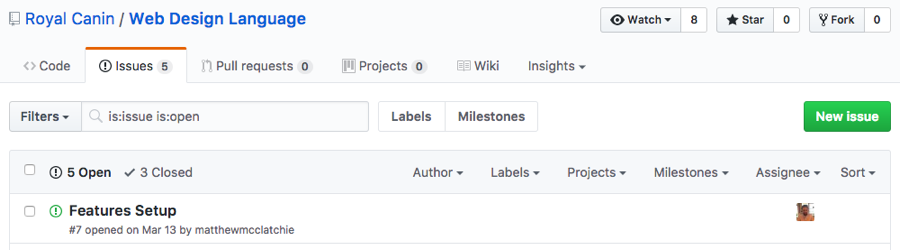
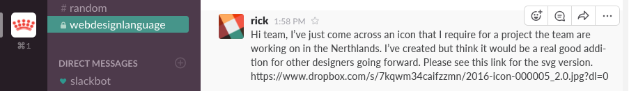

Royal Canin understand that as local markets are implementing Web Design Language features there may be issues that arise or feedback from users. Issue raising and feedback handling are documented below.
Issues
Issues will be handled via Github issues and will aim to offer each developer the chance to review and feed into the code by raising an issue that if deemed valid will be merged into the main code base.
Read more about raising a Github Issue.
Feedback
Design or development feedback is handled by a dedicated Slack channel. Feedback might consist of an icon that doesn’t exist in the Web Design Language that you have created and think might be a good inclusion, or if a component doesn’t look right with certain content.
Read more about the power of Slack.